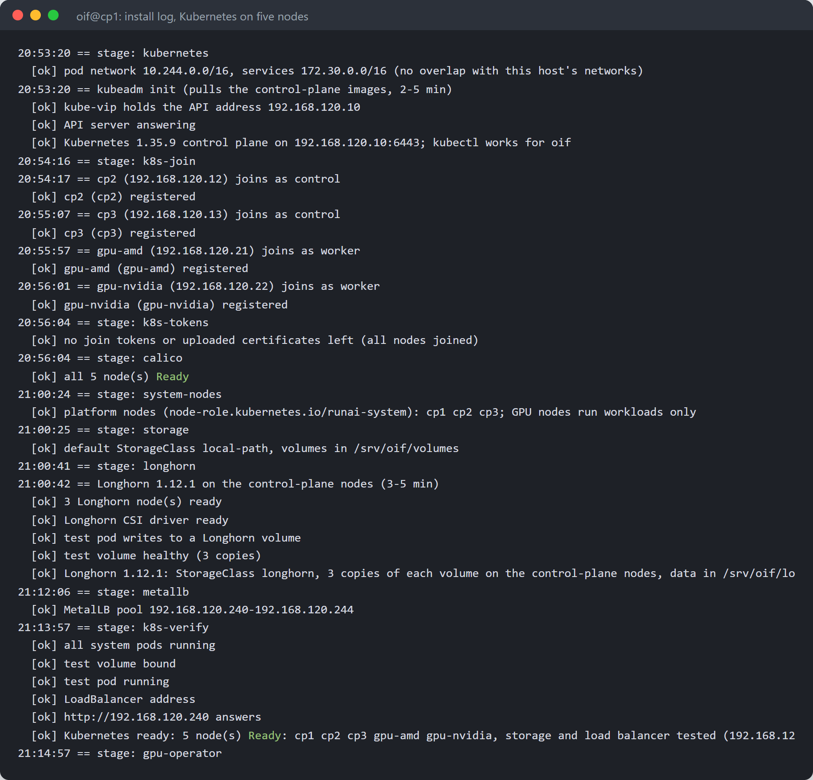
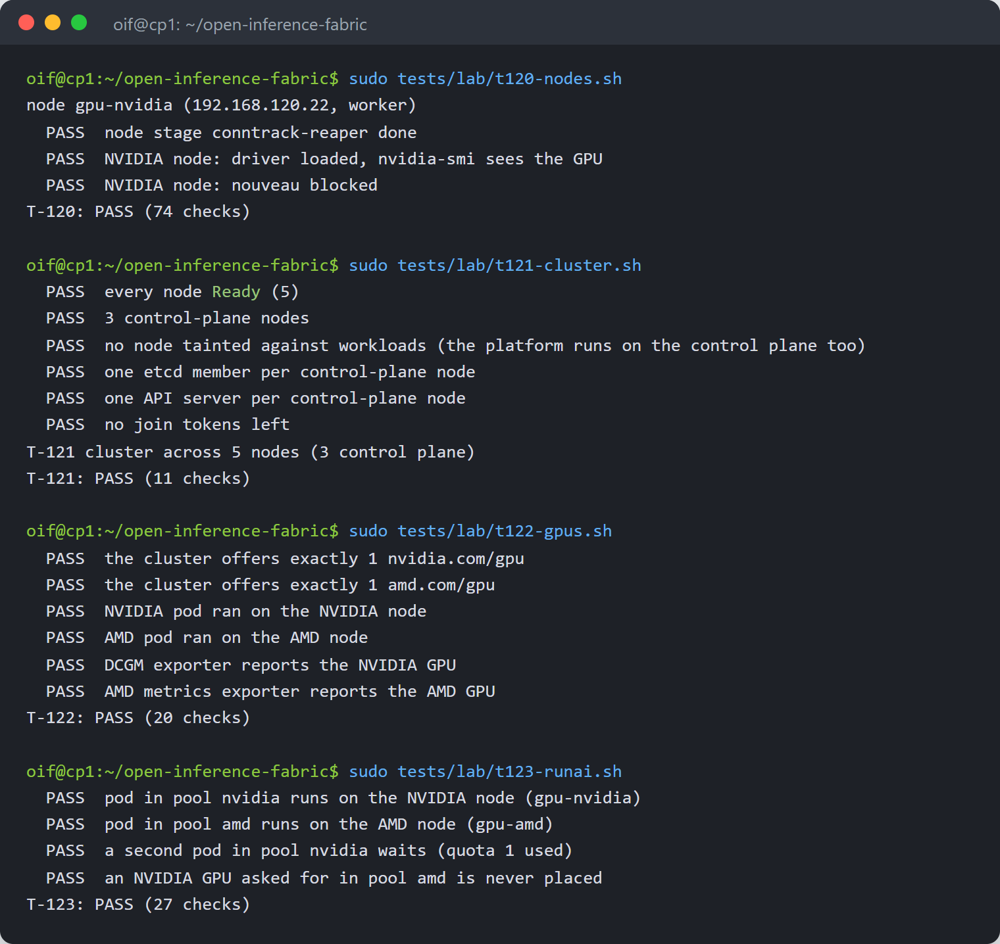
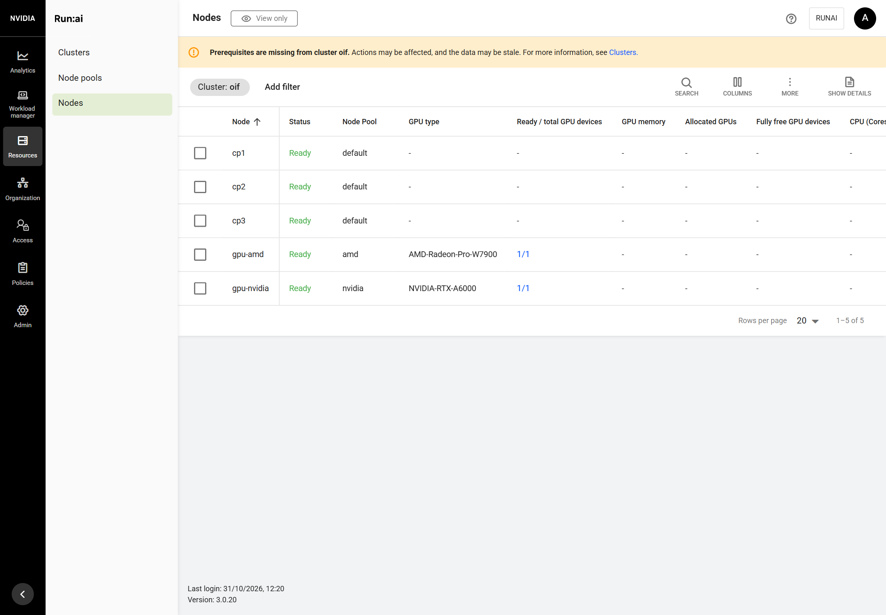
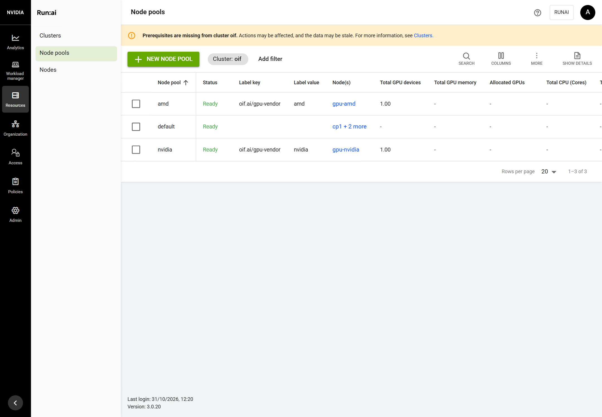
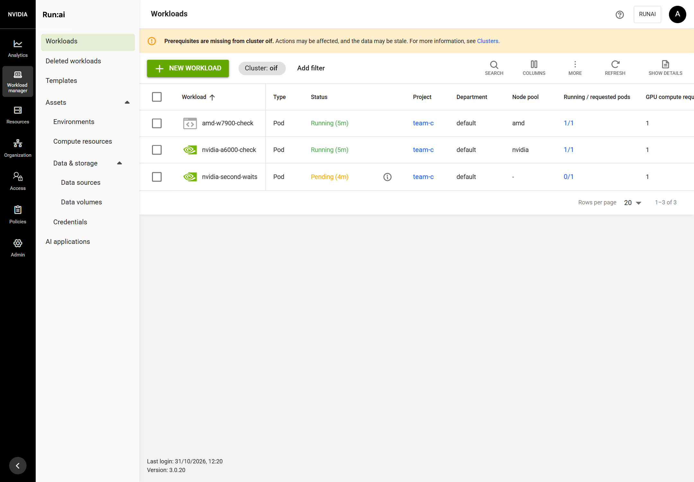
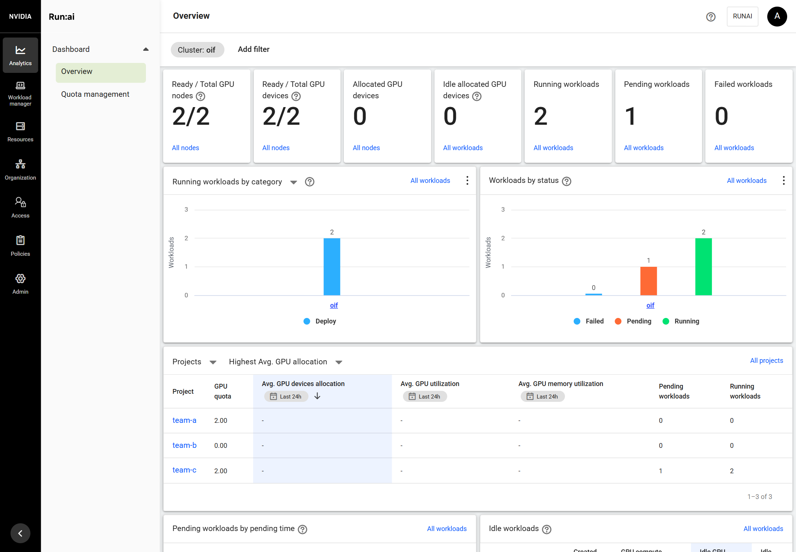
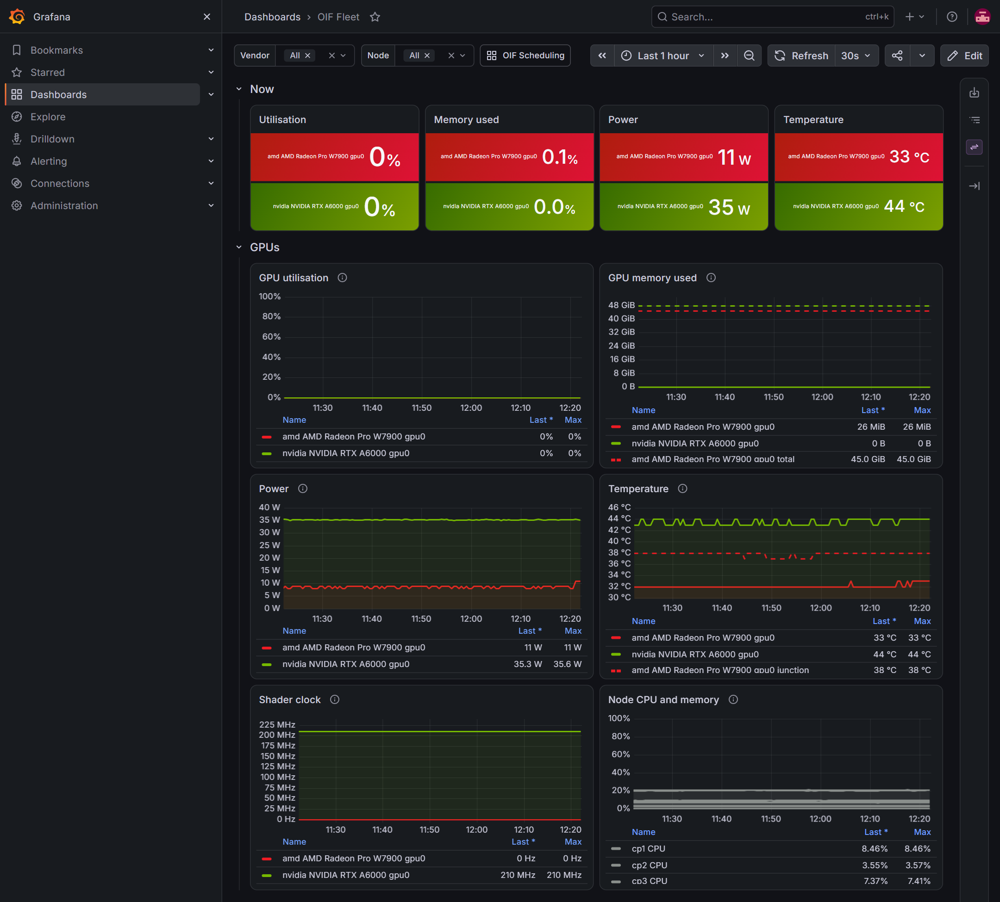
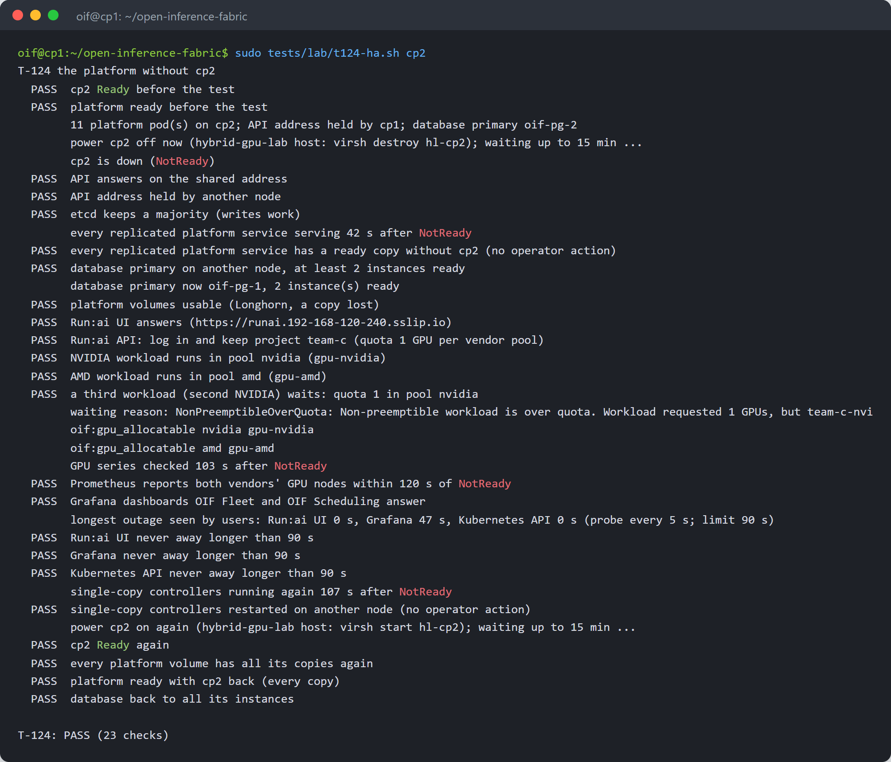

Creating a Virtual Lab to Run Run:ai in HA Mode
Three control-plane nodes and an NVIDIA and an AMD GPU worker node, all as virtual machines on one GPU server. Build the VMs with one command, install Run:ai in high-availability mode with another, run a GPU workload on each vendor, then power off a control-plane node and watch Run:ai keep working. Every step is from a real run.
1The demo in one picture
One GPU server becomes a small five-node cluster, and Run:ai runs on it in high-availability (HA) mode:
- 3 control-plane VMs (
cp1,cp2,cp3) run Kubernetes and Run:ai, with every Run:ai service in at least two copies on different VMs; - 2 GPU worker VMs:
gpu-nvidiaowns an NVIDIA GPU andgpu-amdowns an AMD GPU, each through PCI passthrough, like two separate GPU servers; - Run:ai gets one node pool per vendor (
nvidia,amd), so a workload lands on the right GPU; - at the end you power off a control-plane VM and watch Run:ai keep working.
Two open-source tools do the work, each with one command:
| Tool | What it does | Command |
|---|---|---|
| hybrid-gpu-lab | builds the five VMs on the host, gives each GPU to its VM | sudo ./lab create |
| Open Inference Fabric (oif) | installs Kubernetes, the GPU operators and Run:ai on all five VMs, from the first one | sudo ./oif install |
| Demo part | Where | Time |
|---|---|---|
| Build the five VMs | lab host | 5 minutes |
| Log in to cp1 | your workstation | 1 minute |
Get oif and fill in .env | cp1 | 5 minutes |
| Install | cp1 | about 90 minutes |
| Check it worked | cp1 | 5 minutes |
| Open Run:ai and run a GPU workload per vendor | browser, cp1 | 10 minutes |
| Power off a control-plane node | lab host | 15 minutes |
| Clean up | cp1, lab host | 10 minutes |
Every command and screen in this guide is from a real run on the reference lab: an AMD EPYC server with an NVIDIA RTX A6000 and an AMD Radeon PRO W7900. The step-by-step details behind each part are in the Hybrid GPU Cluster Lab guide and the HA installation guide.
2What you need
- One server with Ubuntu 26.04, virtualisation (AMD-V or VT-x) and the IOMMU turned on in the BIOS
- One NVIDIA and one AMD GPU in that server, not used by the host's display
- Room for the VMs: 168 vCPUs, 336 GiB of memory and about 3.1 TB of thin disk with the default sizes (smaller sizes work for a demo, see
lab.conf) - Internet access from the server (packages, container images)
- A user on the server with sudo, and an SSH key on your workstation (
~/.ssh/id_ed25519)
3Build the five VMs
On the lab host, get the lab tool and tell it which GPUs to use:
git clone https://github.com/manmohanbrahma/hybrid-gpu-lab.git && cd hybrid-gpu-lab cp lab.conf.example lab.conf lspci -D | grep -Ei 'vga|3d|display|audio' # find each GPU and its HDMI audio function nano lab.conf # put those PCI addresses on the gpu-amd and gpu-nvidia lines
In lab.conf, each GPU line lists the GPU and its audio function, for example:
gpu-amd worker 48 96 800 21 0000:c8:00.0,0000:c8:00.1 gpu-nvidia worker 48 96 800 22 0000:82:00.0,0000:82:00.1
Check the host, then build:
./lab check # read-only: KVM, IOMMU groups, CPUs, memory, disk sudo ./lab create # installs KVM if needed, gives the GPUs to vfio-pci, builds the network and the VMs

On the first create the tool asks for your public key and puts it on the VMs. Afterwards:
sudo ./lab status sudo ./lab ssh gpu-nvidia 'lspci | grep -i nvidia' sudo ./lab ssh gpu-amd 'lspci | grep -iE "vga|display"'
| VM | Address | Role |
|---|---|---|
| cp1, cp2, cp3 | 192.168.120.11, .12, .13 | control plane |
| gpu-amd | 192.168.120.21 | worker with the AMD GPU |
| gpu-nvidia | 192.168.120.22 | worker with the NVIDIA GPU |
| (free) | 192.168.120.10 | Kubernetes API address |
| (free) | 192.168.120.240-244 | Run:ai and Grafana addresses (MetalLB) |
To start over at any time: sudo ./lab recreate (destroy, then create). The GPUs stay on vfio-pci, so no host reboot is needed.
4Log in to cp1
The VMs sit on a private network inside the host, so you reach them through the host (-J). Forward your SSH agent (-A): oif uses your key once to put its own key on the other four VMs.
On your workstation:
eval $(ssh-agent -s); ssh-add ~/.ssh/id_ed25519
ssh -A -J <user>@<host-ip> oif@192.168.120.11
ssh-add -l # on cp1: your key must be listedIf ssh-add -l says Could not open a connection to your authentication agent, the agent was not running on your workstation: run the first line again there.
5Get oif and fill in .env
On cp1:
git clone https://github.com/manmohanbrahma/open-inference-fabric.git && cd open-inference-fabric cp .env.example .env nano .env
Set these lines; leave the rest empty (oif fills in defaults or asks):
HOST_IP=192.168.120.11 METALLB_RANGE=192.168.120.240-192.168.120.244 OIF_NODES="192.168.120.11:control 192.168.120.12:control 192.168.120.13:control 192.168.120.21:worker 192.168.120.22:worker" OIF_API_VIP=192.168.120.10 RUNAI_ADMIN_EMAIL=you@example.com RUNAI_ADMIN_PASSWORD=choose-one GRAFANA_ADMIN_PASSWORD=choose-one
Passwords need 12 characters or more; the Run:ai one also needs upper and lower case, a digit and a symbol. Edit the existing lines rather than adding new ones at the end, so each key appears once. Put a password in single quotes if it contains spaces or quotes. Check without showing the passwords (the last line must print 2):
grep -E '^(HOST_IP|METALLB_RANGE|OIF_NODES|OIF_API_VIP|RUNAI_ADMIN_EMAIL)=' .env grep -cE '^(RUNAI_ADMIN_PASSWORD|GRAFANA_ADMIN_PASSWORD)=.+' .env
6Install
On cp1, keeping your agent through sudo:
sudo --preserve-env=SSH_AUTH_SOCK ./oif install
The questions come first:
| Question | Answer for this lab |
|---|---|
| Data folder | Enter (the default) |
| NVIDIA GPUs / AMD GPUs for Kubernetes | Enter (all) |
| AMD display cards to keep away from Kubernetes | none (each GPU VM has one card, for Kubernetes) |
| Put your SSH public key on the other control-plane nodes too | y |
| Anything else | Enter (the default) |
Then oif exchanges keys with the other VMs and continues as a background job, so it survives if your session drops. Follow it:
journalctl -fu oif-install # Ctrl+C stops following, not the install



The gpu-nvidia VM reboots once on its own for its driver: that is expected.
7Check it worked
On cp1, in open-inference-fabric:
sudo tests/lab/t120-nodes.sh # every node prepared sudo tests/lab/t121-cluster.sh # 5 nodes Ready, the API on its shared address sudo tests/lab/t122-gpus.sh # each GPU on its node and driver sudo tests/lab/t123-runai.sh # Run:ai pools per vendor, placement and quota per pool kubectl get nodes -o wide

8Open Run:ai and run a GPU workload per vendor
Open the UI from your workstation
The Run:ai address (192.168.120.240) is on the host's private network. Reach it with an SSH SOCKS tunnel through the host and a browser that uses it:
ssh -N -D 127.0.0.1:11080 <user>@<host-ip> # leave it running
chrome --user-data-dir=$HOME/lab-chrome --proxy-server="socks5://127.0.0.1:11080" \
https://runai.192-168-120-240.sslip.io https://grafana.runai.192-168-120-240.sslip.ioThe names are sslip.io names: they resolve to the address inside them, so no DNS server is needed. oif signs the certificates with its own CA: copy ~/oif-ca.crt from cp1 (scp -J <user>@<host-ip> oif@192.168.120.11:oif-ca.crt .) and trust it on your workstation, or accept the browser warning for the demo. Log in with RUNAI_ADMIN_EMAIL and its password; Grafana's user is admin.


Run one workload per vendor, and see the quota hold
Project team-c (created by the checks above) has a quota of 1 GPU in each vendor pool. On cp1, start one NVIDIA workload, one AMD workload and a second NVIDIA workload:
cat > demo.yaml <<'EOF'
apiVersion: v1
kind: Pod
metadata: {name: nvidia-a6000-check, namespace: runai-team-c, labels: {runai/node-pool: nvidia, app: demo}}
spec:
schedulerName: runai-scheduler
runtimeClassName: nvidia
containers:
- {name: gpu, image: nvcr.io/nvidia/k8s/cuda-sample:vectoradd-cuda12.5.0, command: [sh, -c, "nvidia-smi -L && sleep 3600"], resources: {limits: {nvidia.com/gpu: 1}}}
---
apiVersion: v1
kind: Pod
metadata: {name: amd-w7900-check, namespace: runai-team-c, labels: {runai/node-pool: amd, app: demo}}
spec:
schedulerName: runai-scheduler
containers:
- {name: gpu, image: docker.io/library/busybox:1.37.0, command: [sh, -c, "ls /dev/kfd /dev/dri && sleep 3600"], resources: {limits: {amd.com/gpu: 1}}}
---
apiVersion: v1
kind: Pod
metadata: {name: nvidia-second-waits, namespace: runai-team-c, labels: {runai/node-pool: nvidia, app: demo}}
spec:
schedulerName: runai-scheduler
runtimeClassName: nvidia
containers:
- {name: gpu, image: nvcr.io/nvidia/k8s/cuda-sample:vectoradd-cuda12.5.0, command: [sh, -c, "nvidia-smi -L && sleep 3600"], resources: {limits: {nvidia.com/gpu: 1}}}
EOF
kubectl apply -f demo.yaml
kubectl -n runai-team-c get pods -o wideThe first two run, each on its vendor's VM; the third stays Pending, because team-c's NVIDIA quota is used. Run:ai shows the same:



The cluster page shows Missing prerequisites: GPU fractions need NVIDIA driver r615 or later and are off with the lab's 595 driver. Whole-GPU workloads are not affected.
9Power off a control-plane node
This is the HA part of the demo. Pick the node that hurts most to lose: the one running the database primary. On cp1:
kubectl -n oif-db get pods -l cnpg.io/instanceRole=primary -o wide # NODE column: e.g. cp2On the lab host, start a watch that does what a user does, every 5 seconds (copy oif-ca.crt there first, as in the Run:ai section):
while sleep 5; do
printf '%s ui %s grafana %s\n' "$(date +%T)" \
"$(curl -s -o /dev/null -w '%{http_code}' --max-time 4 --cacert oif-ca.crt https://runai.192-168-120-240.sslip.io)" \
"$(curl -s -o /dev/null -w '%{http_code}' --max-time 4 --cacert oif-ca.crt https://grafana.runai.192-168-120-240.sslip.io/api/health)"
doneIn a second window on the host, pull the power of that node (here cp2; the VMs are named hl-<name>):
sudo virsh destroy hl-cp2 # an instant power-off, not a shutdownWatch from cp1 (or cp3 if you powered off cp1) while it happens:
kubectl get nodes -w # cp2 turns NotReady after about 20 s kubectl -n oif-db get pods -l cnpg.io/instanceRole=primary -o wide # a new primary on another node kubectl -n runai-team-c get pods # the demo workloads keep running on the GPU nodes
Keep using the Run:ai UI in the browser. Then power the node on again and watch it rejoin:
sudo virsh start hl-cp2 # on the hostWhat a user saw on the reference run, measured from outside the cluster with cp2 holding both the database primary and the ingress address:
| Service | Away for | Target |
|---|---|---|
| Run:ai UI | 0 s | under 90 s |
| Run:ai login and API call | 67 s | under 90 s |
| Grafana | 47 s | under 90 s |
Nobody acted: no restart, no command. The short login gap is the database failover: 20 s until Kubernetes declares the node down, then the standby takes over and Run:ai reconnects.

For the scripted version of this test, with 23 checks and an outside probe that logs in to Run:ai every 5 seconds, see Power off a control-plane node in the HA installation guide.
10Clean up
Remove the demo workloads (on cp1):
kubectl delete -f demo.yaml
Remove everything oif installed, from all five VMs (on cp1; type wipe to confirm):
sudo ./oif uninstall for n in 11 12 13 21 22; do ssh oif@192.168.120.$n 'bash -s' < tests/host/verify-clean.sh; done
Or simply delete the VMs (on the lab host), which also removes everything inside them:
sudo ./lab destroy # VMs, disks and network gone; the image and lab.conf kept sudo ./lab host-clean # also undo the host setup (KVM packages, GPUs on vfio-pci)
After ./lab destroy and ./lab create, the VMs have new SSH host keys: on your workstation, forget the old ones with for n in 10 11 12 13 21 22; do ssh-keygen -R 192.168.120.$n; done.
11When something goes wrong
| Symptom | Fix |
|---|---|
sudo: cannot execute ... ./lab: Permission denied | An old clone without the executable bit: git pull, or chmod 755 lab. |
ssh-add -l: Could not open a connection to your authentication agent | Start the agent on your workstation (eval $(ssh-agent -s); ssh-add) and log in again with ssh -A. |
REMOTE HOST IDENTIFICATION HAS CHANGED | The VMs were rebuilt: ssh-keygen -R 192.168.120.<n> on your workstation. |
cluster key is not on every node during the install | Your agent did not reach sudo: log in with ssh -A and use sudo --preserve-env=SSH_AUTH_SOCK ./oif install. |
| A GPU VM does not see its GPU | ./lab check on the host: each GPU must be in an IOMMU group of its own, and not driving the host's display. |
A Run:ai workload stays Pending with NonPreemptibleOverQuota | The project's quota in that pool is used: that is the quota working. |
The browser cannot open runai.192-168-120-240.sslip.io | The SOCKS tunnel is not running, or the browser was not started with --proxy-server. |